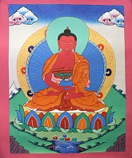

Амитабха (санскр. "Безграничный Свет") – один из пяти дхьяни-будд, будда западного направления. Особой формой Будды Амитабхи является Будда Бесконечной Жизни – Амитаюс.
До достижения состояния Амитабха был бодхисаттвой по имени Дхармакара. Много кальп назад он зародил в сознании решимость создать особый мир будды (санскр. “buddhasetra”), обладающий всеми совершенствами, где могли бы перерождаться все страдающие существа, имеющие веру в него. После достижения состояния Амитабха создал такой мир, который стал называться Сукхавати (Исполненное Счастья Пространство) и стал им управлять.
Упоминания об красном дхьяни Будде появились в текстах, относящихся к колеснице Махаяны. Он упоминается в сочинениях в трудах великих учителей, как Асанга и Нагарджуна.
Амитабха сидит в медитативной позе на лотосовом троне, на нём украшения Самбхогакаи, на голове – корона. Руки Амитабхи сложены в дхьяна-мудре (самадхи-мудра), то есть покоятся на бёдрах с ладонями, развёрнутыми вверх, при этом правая ладонь находится над левой, а кончики больших пальцев соединены. В его руках – патра (горшок для подаяния пищи).
Считается, что благодаря устремлениям Будды Амитабхи, переродиться в Сукхавати довольно просто. Там вы будете жить рядом с Буддой Амитабхой и бодхисаттвами. Получая учения Махаяны и практикуя, вы быстро продвинетесь по пяти путям и десяти бхуми, и, в конце концов, достигните просветленного состояния самого Будды Амитабхи. Переродиться там не только не трудно, но и очень полезно: после этого уже невозможно снова упасть в миры Cансары.